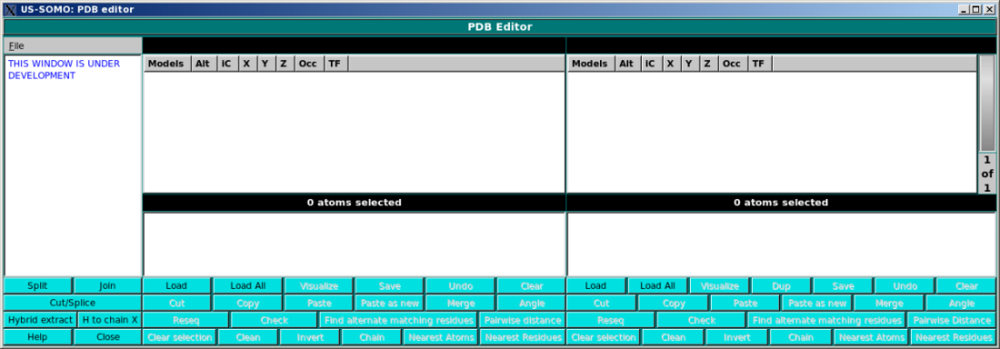

| |
Manual |

In this module, still under development, you will find an advanced PDB files editor.
 |
|
In this subpanel, you can perform some global operations on PDB files.
|
|
In the main panel, the user will be able visualize in detail PDB files content, and perform multiple operations on them. The screen is divided in two identical panels, so that content can be copied/edited/cut/pasted between two different files.
|
This document is part of the UltraScan Software Documentation
distribution.
Copyright © notice.
The latest version of this document can always be found at:
http://www.ultrascan.uthscsa.edu
Last modified on November 29, 2011.